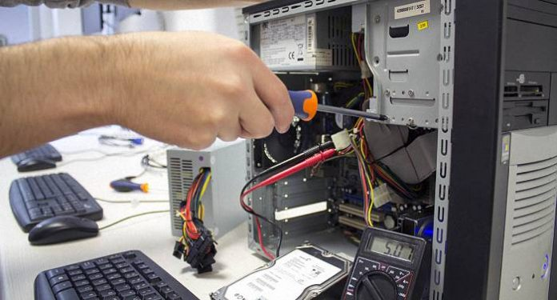

Home
Diagnóstico y Reparación de PCs
Mantenimiento Remoto
Técnico a Domicilio
Venta de Accesorios
Contacto
Servicio de Reparación de PCs
Reparación de PC Ofrecemos soluciones a todos los problemas causados por software y hardware (programas, componentes, perifericos, etc) de su PC. Por todo componente que sea necesario reemplazar, ofrecemos factura y entregamos la pieza cambiada.
